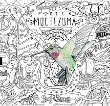

Galeria
En esta sección se encuentran algunas imagenes, audios y videos que se relacionan con la Ciudad de México
"La China" (track no.4) que forma parte del álbum "Moctezuma"

Moctezuma es el tercer álbum de estudio de la banda mexicana
Porter ,
lanzado el 18 de agosto de 2014.
El álbum fue nombrado así por Moctezuma Xocoyotzin ,
gobernante de Tenochtitlán. Por medio de este álbum, Porter nos narra la
conquista de México, de forma casi cronológica.
Video del Monumento El Angel a la Independencia
Ir al Formulario Inicio